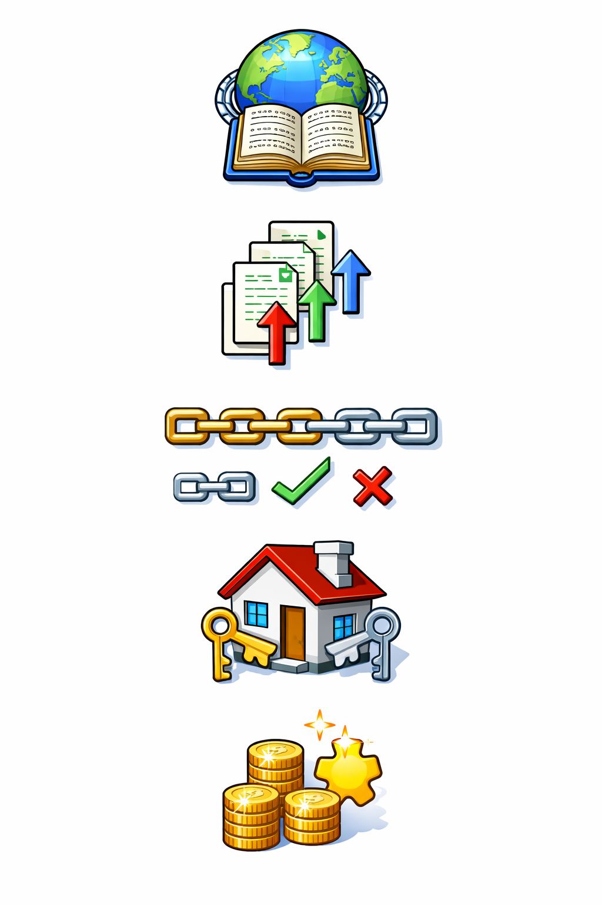
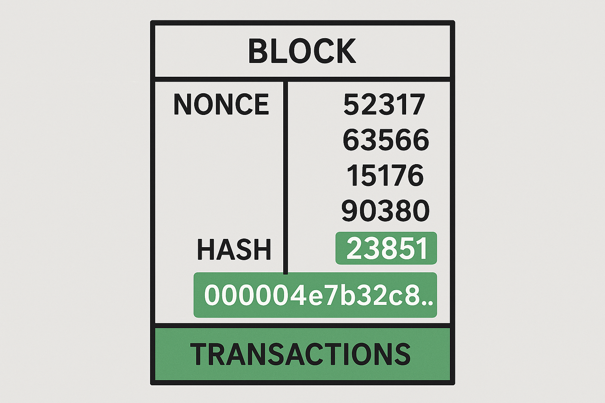

Section VI: Bitcoin Framework · Lesson 01-BF
Bitcoin — Origins and Mechanics
And Now, Bitcoin
So far, we have studied the history that led to Bitcoin, the cryptographic primitives it depends on, the principles of distributed computing, consensus protocols, and how blockchains work in permissioned systems.
This section develops Bitcoin as a technical system: blocks, transactions, mining, networking, and security.
In this lesson, we assemble everything we have learned so far into a coherent picture of how Bitcoin works.
The Emergence of Bitcoin
In 2008, trust in traditional financial intermediaries was collapsing, which sharpened interest in alternatives to bank-centered digital money.
Earlier digital cash systems still depended on trusted intermediaries or assumptions that did not hold on the open internet.
A successful internet-native cash system also needed global access and censorship resistance.
Double‑spending digital money was the central technical problem without a shared ledger or trusted arbiter.
Satoshi Nakamoto’s Whitepaper
On October 31, 2008, a paper titled Bitcoin: A Peer-to-Peer Electronic Cash System, authored by Satoshi Nakamoto, appeared on the Cryptography Mailing List.
The paper entered a community already debating privacy, digital cash, and whether cryptography could replace trust in centralized institutions.
It gained traction because it did more than criticize the old model: it offered a concrete technical design for decentralized digital cash.
The real identity behind the pseudonym Satoshi Nakamoto remains unknown today.
Bitcoin: The Mission Statement
Abstract. A purely peer-to-peer version of electronic cash would allow online payments to be sent directly from one party to another without going through a financial institution… We propose a solution to the double-spending problem using a peer-to-peer network.
Introduction. What is needed is an electronic payment system based on cryptographic proof instead of trust, allowing any two willing parties to transact directly with each other without the need for a trusted third party. Transactions that are computationally impractical to reverse would protect sellers from fraud….
Every phrase here is a design requirement: purely peer-to-peer, no trusted third party, cryptographic proof instead of trust, and computationally impractical to reverse.
Lessons from Precursors
| Feature | DigiCash (Chaum) 1980s–1990s |
Hashcash (Back) 1997 |
b-money / bit gold 1998 |
E-Gold Early 2000s |
Bitcoin (Nakamoto) 2008–2009 |
|---|---|---|---|---|---|
| Trust Model | Centralized issuer | No issuer; standalone PoW scheme | Decentralized (theory) | Centralized company | |
| Double-Spend Prevention | Central ledger | No ledger | Proposed distributed accounting, but consensus unresolved | Central ledger | |
| Scarcity / Costliness | Bank-issued digital cash | Computational work stamps | Work-based money concepts | Gold-backed balances | |
| Point of Failure | Company and issuing bank | Not designed as a full payment network | Consensus and implementation never operationalized | Legal and operational shutdown |
Lessons from Precursors
| Feature | DigiCash (Chaum) 1980s–1990s |
Hashcash (Back) 1997 |
b-money / bit gold 1998 |
E-Gold Early 2000s |
Bitcoin (Nakamoto) 2008–2009 |
|---|---|---|---|---|---|
| Trust Model | Centralized issuer | No issuer; standalone PoW scheme | Decentralized (theory) | Centralized company | Decentralized in practice |
| Double-Spend Prevention | Central ledger | No ledger | Proposed distributed accounting, but consensus unresolved | Central ledger | |
| Scarcity / Costliness | Bank-issued digital cash | Computational work stamps | Work-based money concepts | Gold-backed balances | |
| Point of Failure | Company and issuing bank | Not designed as a full payment network | Consensus and implementation never operationalized | Legal and operational shutdown |
Lessons from Precursors
| Feature | DigiCash (Chaum) 1980s–1990s |
Hashcash (Back) 1997 |
b-money / bit gold 1998 |
E-Gold Early 2000s |
Bitcoin (Nakamoto) 2008–2009 |
|---|---|---|---|---|---|
| Trust Model | Centralized issuer | No issuer; standalone PoW scheme | Decentralized (theory) | Centralized company | Decentralized in practice |
| Double-Spend Prevention | Central ledger | No ledger | Proposed distributed accounting, but consensus unresolved | Central ledger | PoW consensus plus network verification |
| Scarcity / Costliness | Bank-issued digital cash | Computational work stamps | Work-based money concepts | Gold-backed balances | |
| Point of Failure | Company and issuing bank | Not designed as a full payment network | Consensus and implementation never operationalized | Legal and operational shutdown |
Lessons from Precursors
| Feature | DigiCash (Chaum) 1980s–1990s |
Hashcash (Back) 1997 |
b-money / bit gold 1998 |
E-Gold Early 2000s |
Bitcoin (Nakamoto) 2008–2009 |
|---|---|---|---|---|---|
| Trust Model | Centralized issuer | No issuer; standalone PoW scheme | Decentralized (theory) | Centralized company | Decentralized in practice |
| Double-Spend Prevention | Central ledger | No ledger | Proposed distributed accounting, but consensus unresolved | Central ledger | PoW consensus plus network verification |
| Scarcity / Costliness | Bank-issued digital cash | Computational work stamps | Work-based money concepts | Gold-backed balances | PoW secures issuance and history |
| Point of Failure | Company and issuing bank | Not designed as a full payment network | Consensus and implementation never operationalized | Legal and operational shutdown |
Lessons from Precursors
| Feature | DigiCash (Chaum) 1980s–1990s |
Hashcash (Back) 1997 |
b-money / bit gold 1998 |
E-Gold Early 2000s |
Bitcoin (Nakamoto) 2008–2009 |
|---|---|---|---|---|---|
| Trust Model | Centralized issuer | No issuer; standalone PoW scheme | Decentralized (theory) | Centralized company | Decentralized in practice |
| Double-Spend Prevention | Central ledger | No ledger | Proposed distributed accounting, but consensus unresolved | Central ledger | PoW consensus plus network verification |
| Scarcity / Costliness | Bank-issued digital cash | Computational work stamps | Work-based money concepts | Gold-backed balances | PoW secures issuance and history |
| Point of Failure | Company and issuing bank | Not designed as a full payment network | Consensus and implementation never operationalized | Legal and operational shutdown | Majority attack economics (difficult) |
Lessons from Precursors
| Feature | DigiCash (Chaum) 1980s–1990s |
Hashcash (Back) 1997 |
b-money / bit gold 1998 |
E-Gold Early 2000s |
Bitcoin (Nakamoto) 2008–2009 |
|---|---|---|---|---|---|
| Trust Model | Centralized issuer | No issuer; standalone PoW scheme | Decentralized (theory) | Centralized company | Decentralized in practice |
| Double-Spend Prevention | Central ledger | No ledger | Proposed distributed accounting, but consensus unresolved | Central ledger | PoW consensus plus network verification |
| Scarcity / Costliness | Bank-issued digital cash | Computational work stamps | Work-based money concepts | Gold-backed balances | PoW secures issuance and history |
| Point of Failure | Company and issuing bank | Not designed as a full payment network | Consensus and implementation never operationalized | Legal and operational shutdown | Majority attack economics (difficult) |
Bitcoin, Simplified
Think of Bitcoin as a global append‑only ledger shared by peers.
Anyone can propose the next page (block) by showing work; others verify and accept.
The chain with the most cumulative work is the canonical history.
Ownership of funds is control of private keys
Incentives (block reward + fees) promote security and honest participation.

Primitive 1: Ownership via Digital Signatures
Nakamoto defines an electronic coin as a “chain of digital signatures.”
- To transfer a coin, the current owner (say, Alice) uses her private key to digitally sign a hash of the previous transaction plus the public key of the next owner (Bob).
- This creates a new link in the chain of ownership.
- Anyone can verify this chain of signatures to confirm that Alice indeed had the right to spend that coin.
The Limitation: This mechanism proves who can spend a coin, but not whether that coin was already spent somewhere else.
Primitive 2: The Public Ledger via P2P Networking
To solve double-spending, the network needs a single, global history of all transactions. Nakamoto’s solution is radical transparency:
- Public Announcement: All transactions are broadcast to all nodes on a peer-to-peer (P2P) network.
- Blocks: Nodes collect these transactions into a “block.”
- The New Challenge: The task shifts from verifying individual transactions to agreeing on the order of transactions. Without a central timekeeper, ordering is a hard problem.
Primitive 3: Consensus via Proof-of-Work
Bitcoin orders blocks by making miners prove computational work before a new block is accepted.
- Build a Candidate Block: A miner gathers pending transactions from the mempool and forms a candidate block.
- Search for a Valid Hash: The miner changes the nonce until the block header hash falls below the difficulty target.
- Broadcast and Verify: The first miner with a valid proof broadcasts the block; other nodes verify it and add it to the chain.

Mempool: every node keeps a local copy of the network’s known pending transactions waiting to be included in a block.
A Practical Solution to Byzantine Generals
Recall the Byzantine Generals Problem (BGP) as a classic thought experiment in distributed computing.
- The Problem: How can distributed participants reach agreement if some members are malicious?
- Bitcoin’s Solution: The longest Proof-of-Work chain becomes the agreed plan. It is trusted not because of who the participants are, but because creating that chain required tremendous computational effort.
How Double-Spending is Solved
If Bitcoin can solve the Byzantine Generals Problem in practice, it can solve double-spending by converging on one accepted transaction history:
- The Chain: Each block includes the hash of the previous block, forming a cryptographically linked chain. Changing an earlier block would break its link to all subsequent blocks.
- The Longest Chain Rule: By convention, all nodes treat the longest chain—the one with the most cumulative proof-of-work—as the valid history that everyone accepts.
- The Cost of Attack: To reverse a transaction, an attacker would have to redo the proof-of-work for that block and all blocks after it, then catch up and surpass the work of the honest network.
In practice, the probability of a successful attacker catching up diminishes exponentially with each new block added on top of the transaction.
Incentives: Making Honesty Profitable
Why would anyone expend electricity and computing power to do all this work?
- Block Reward: The first transaction in each new block is the coinbase transaction, which creates new bitcoins and awards them to the miner who found the block. This is how new bitcoins enter circulation. As time goes on, the reward is halved.
- Transaction Fees: Additionally, users can include small transaction fees in their payments. These fees are collected by the miner who adds that transaction to a block.
Together, these incentives make it more profitable for a rational actor to follow the protocol than to attack it. An attack would be extraordinarily expensive, and even if successful, would likely destroy the very value the attacker is trying to steal.
Monetary Policy
Incentives provide security by rewarding miners for honest participation in block production.
Bitcoin also enforces scarcity through a hard cap of about 21 million bitcoin, limiting total issuance rather than allowing open-ended creation.
New bitcoin enters through the coinbase transaction, which awards the block subsidy to the miner who adds a valid block.
A halving cuts the block subsidy in half every 210,000 blocks, or roughly every four years.
Over time, miner compensation shifts away from newly issued bitcoin and toward transaction fees, tying long-run security more closely to demand for block space.
Security Model & Threats
Assumes majority of honest work; 51% attacker can rewrite recent history.
Selfish mining, eclipse attacks, network partitions are notable risks.
Full nodes mitigate many risks by enforcing validity and rejecting bad blocks.
Confirmations reduce reorg risk; fee incentives align honest behavior.
Security is economic and probabilistic, not absolute.
The Network Comes Alive: The First Blocks
- January 3, 2009: The Genesis Block (Block 0) is mined by Satoshi Nakamoto.
- January 9, 2009: Satoshi releases the first version of the Bitcoin software to the public.
- January 12, 2009: The first Bitcoin transaction occurs – Satoshi sends 10 BTC to Hal Finney, a respected cryptographer and early cypherpunk.
This first transaction was a critical proof-of-concept, demonstrating that the system described in the whitepaper actually worked in practice.
The 10,000 BTC Pizza
On May 22, 2010, Laszlo Hanyecz offered 10,000 BTC on Bitcointalk for two large pizzas.
Another user arranged the order from a Papa John’s in Florida and had the pizzas delivered to Hanyecz.
Hanyecz then transferred 10,000 BTC, marking the first documented Bitcoin purchase of a physical good.
At the time, the transaction was worth about $41 total.
The event is now remembered as Bitcoin Pizza Day, a proof-of-concept that gave Bitcoin an early real-world price.
Skepticism
From its inception, Bitcoin was met with intense criticism on multiple fronts.
- Economic Skepticism: Critics have argued that Bitcoin’s extreme price volatility made it impractical as a currency. It is often labeled a speculative bubble or even a Ponzi scheme with no intrinsic value.
- Technical Skepticism: Many observe that Bitcoin is inefficient: it handles only a handful of transactions per second and consumes vast amounts of electricity for mining.
- Social & Legal Skepticism: Bitcoin’s pseudonymous nature and lack of regulatory oversight makes it attractive for illicit activities (e.g., the Silk Road online marketplace), raising concerns about crime and money laundering. Bitcoin has enabled ransomware.
Benefits of Bitcoin’s Design
Decentralization: no single point of control/failure; open participation.
Censorship resistance: hard to block valid transactions; permissionless access.
Verifiability: anyone can run a node and independently check rules/history.
Predictable monetary policy: transparent issuance; 21M cap.
Robustness: resilient to outages/attacks; conservative governance and upgrades.
Limitations and Trade‑Offs
Scalability: mining difficulty and limited block size restrict throughput, while multiple confirmations add latency before a block is treated as secure.
Energy use: PoW consumes substantial electricity; debated but integral to security model.
UX & key management: self‑custody is powerful but difficult for many users.
Privacy: transparent ledger yields pseudonymity, not strong anonymity.
Protocol governance friction: new features can have slow adoption.
Bitcoin as a System
Bitcoin combines three primitives into one working system: digital signatures for ownership, a public ledger shared across nodes, and proof-of-work for consensus.
Together, these primitives let the network verify transactions, agree on their order, and resist double-spending without a central intermediary.
What makes Bitcoin important is not any one part alone, but the way these pieces reinforce one another through incentives, verification, and network participation.
Next lesson, we focus on Bitcoin’s two core actions: transactions and mining.